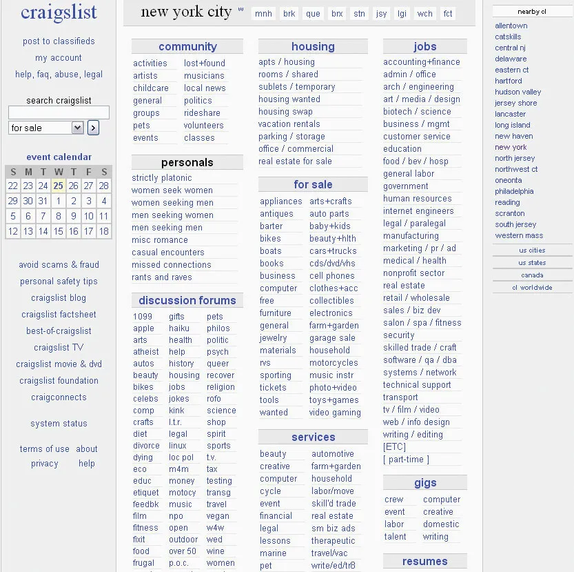
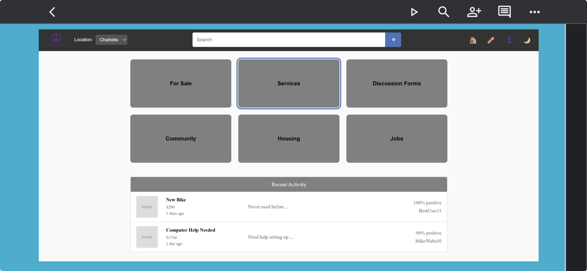
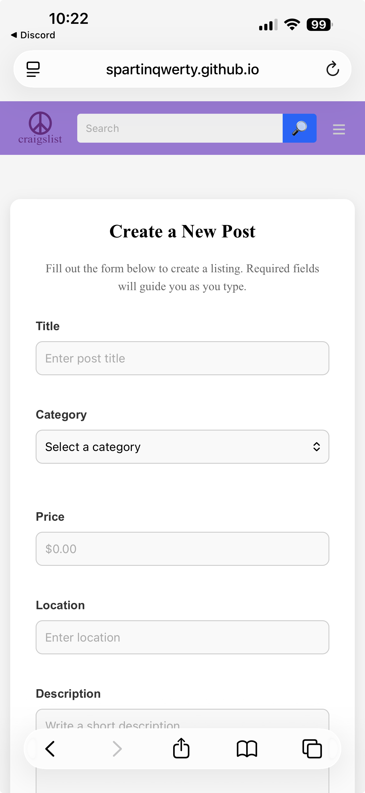
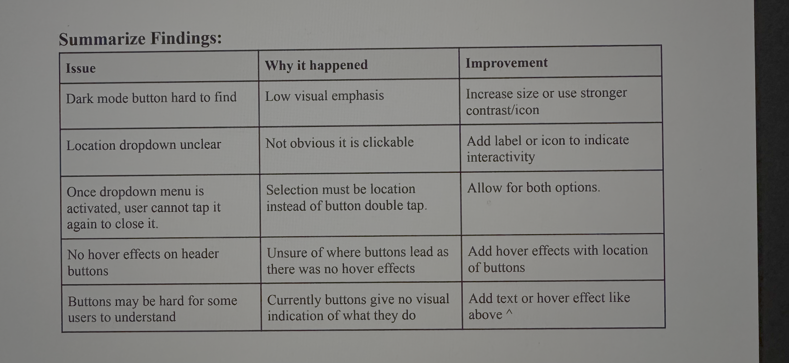

Project Overview
For this team project, we redesigned a Craigslist-style website to make the experience feel more modern, easier to navigate, and more usable across screen sizes. My work focused on front-end implementation and improving the posting/search experience through cleaner page structure, reusable header behavior, form validation, responsive styling, and interactive feedback.
Problem
Craigslist is useful because it gives users quick access to local listings, but the experience can feel visually outdated and harder to use on modern devices. The main design gap our team addressed was how users browse categories, search for listings, and create new posts without feeling lost. A user should be able to quickly understand where to go, what action to take next, and whether their input is working.
The redesign focused on improving clarity, responsiveness, and interaction feedback. This mattered because users may be browsing quickly on mobile, posting from a laptop, or switching between sections like housing, jobs, services, and for-sale listings.
Original Design Critique
Before redesigning, we looked at the original Craigslist experience and identified areas that could be improved without removing the simplicity that makes the site familiar.
- The layout felt text-heavy and did not clearly guide users toward primary actions.
- Navigation was functional, but it could be easier to scan and use on smaller screens.
- Posting a new listing needed clearer input expectations and validation feedback.
- The interface needed stronger visual hierarchy so users could tell which content was most important.

Design and Development Process
1. Planning the main user flows
Our team broke the redesign into core flows: browsing categories, searching, viewing activity, changing location, and creating a new post. This helped us make sure the interface supported the main actions users expect from a Craigslist-style site.
2. Building a reusable header
I worked with a reusable header structure so the navigation, location selector, search bar, and theme behavior could stay consistent across pages. This made the site easier to maintain and helped the project feel more unified.
3. Improving the new post flow
I worked on the new post page and JavaScript behavior so the form felt more interactive. The goal was to help users complete a post with clearer fields, basic validation, and feedback instead of feeling like they were submitting into a blank page.
4. Adding responsive and interactive details
The redesign included responsive styling, a mobile-friendly navigation experience, hover feedback, search suggestions, dark mode support, and saved preferences through local storage. These details helped the prototype feel closer to a real site instead of a static mockup.


Key Design Decisions
- Simple navigation: We kept categories visible so users could quickly jump to the area they wanted.
- Responsive layout: The site was designed to work on both mobile and desktop because users may browse listings from different devices.
- Interactive feedback: Search suggestions, hover states, and form messages helped users understand that the interface was responding.
- Consistent styling: Reusing colors, spacing, and header behavior made the pages feel like one connected product.
Testing and Feedback
We tested the redesign by opening the site locally and through GitHub Pages, checking whether navigation links worked, whether pages loaded correctly, and whether the interface still made sense on different screen sizes. We also used peer feedback to identify rough spots in the flow.
One issue found during testing was that some interactive pieces worked locally but needed to be checked again after deployment. This helped us focus on testing the live version, not just the VS Code version. Another area we improved was making sure the new post page had clearer input behavior and that the shared header remained consistent across pages.
- Checked that navigation links moved users to the correct pages.
- Tested search suggestion behavior with matching and non-matching input.
- Reviewed the new post form for missing or unclear fields.
- Confirmed that the deployed GitHub Pages version loaded publicly.

Final Product
The final redesign is a live Craigslist-style website with clearer navigation, a cleaner layout, responsive behavior, and interactive elements that support browsing and posting. Compared to the original experience, the redesign gives users more visual structure and clearer feedback while keeping the site simple and familiar.
View Final Live SiteReflection
This project helped me practice turning a critique into actual design and code decisions. I learned that a redesign is not just about making a page look newer. It also has to make the user's next step easier to understand. Working with HTML, CSS, JavaScript, GitHub, and GitHub Pages also helped me practice front-end implementation, deployment, and team coordination.